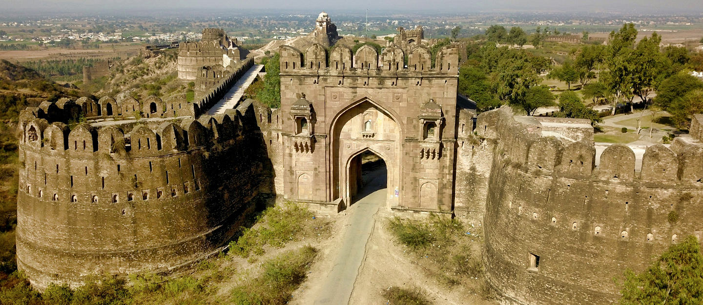
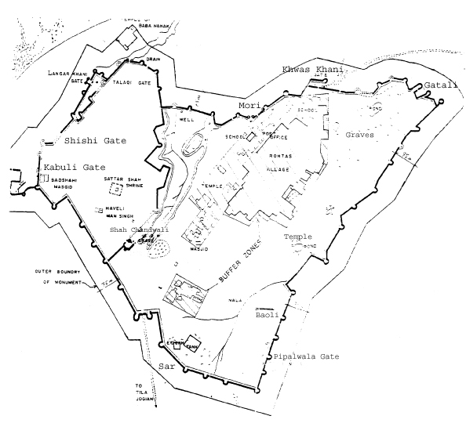

Famous Fort of Jehlum Still available for tourists.
Rohtas Fort of Jehlum
Introduction
Rohtas Fort is a 16th-century fortress
located near the city of Jhelum in the Punjab province of Pakistan. The fort is one
of the largest and most formidable in the subcontinent. Rohtas Fort was never
taken by force, and it has remained remarkably intact.
The fortress was built by Raja Todar Mal on the orders of Sher Shah Suri.
The fort is known for its large defensive walls and several monumental gateways.
Rohtas Fort was declared a UNESCO World Heritage Site in 1997, as an "exceptional
example of the Muslim military architecture of Central and South Asia."
Location
The fort lies eight kilometers south of the Grand Trunk Road. It is approximately 16
km NW of Jhelum, and is near the city of Dina. It is approximately 3 km from Khukha.
The historic Shahrah-e-Azam road once passed along the outer northern wall of the
fort.
Rohtas Fort was built on a hill overlooking a gorge where the Kahan River [ceb]
meets a seasonal stream called Parnal Khas within the Tilla Jogian Range. The fort
is about 300 feet (91 m) above its surroundings. It is 2,660 feet (810 m) above sea
level and covers an area of 70 hectares.
Background
The fort was commissioned by Sher Shah Suri, founder of the Sur Empire. It was
designed to block the advances of the Mughal emperor Humayun, who had been exiled to
Persia following his defeat at the Battle of Kannauj. The fort occupies a strategic
position between the mountains of Afghanistan and the plains of Punjab, and was
intended to prevent the Mughal emperor from returning to India.
History

Arial View of Rohtas Fort
The origin of the fort goes back to the Sur dynasty, when emperor Sher Shah Suri
ordered the fort built after his victory over the Mughal emperor Humayun.
Construction of the fort began in the year 1541. It was built primarily to
defend against the Mughals. The fort was ceded to Mughal emperor Humayun in the
year 1555.
The fort lost much of its significance as the fort's purpose of subduing Mughal
tribesmen, as well as the preventing the return of Emperor Humayun, was no
longer required. Further, the construction of the nearby Attock Fort in the
1580s by Emperor Akbar better served Mughal interests.
The fort remained in use during the Mughal era, and was used almost continuously
until 1707, though it was not popular with the Mughal rulers. The Afsharid
ruler Nadir Shah camped at the fort during his attack on the Mughal Empire. Also
the Afghan chieftain Ahmed Shah Abdali used the fort in his expeditions in the
Punjab during the waning days of the Mughal empire. It was briefly conquered
by the Marathas in 1758. The Afghans retook the fort in 1759.
In 1825, the Sikh forces of Gurmukh Singh Lamba took the fort so Rohtas was
thereafter used for administrative purposes by the Sikh Empire until its collapse by
the British in 1849.
Layout of Fort

Layout of Rohtas Fort
Rohtas Fort covers an area of 70 hectares, enclosed by four kilometres of
walls bolstered by 68 bastion towers and twelve gates. The fort forms an
irregularly shaped triangle, and follows the contours of the hill it was
constructed on. The northwest corner of the fort is walled off from the rest of
the fort by a 533-metre-long (1,749 ft) wall. The enclosed section served as
a citadel for elites and was more heavily guarded. The enclosed section
contains much of the fort's notable features. The
fort's Langar Khani gate opens into the citadel, but is actually a trap that is
in the direct line of fire from the fort's bastions. The large fort could hold
up to 30,000 men. Due to its location, massive walls, trap gates and three
baolis (stepwells), it could have withstood a major siege, but was never
actually besieged. There are no palaces in the fort except for the Raja Man
Singh Haveli, which is built on the highest point of the citadel. The area of
the fort is 3200 canals.
The height of the outer wall varies between 10 and 18 metres, with a thickness that
varies between ten and 13 metres. The fortified walls have 68 bastions at irregular
intervals, with twelve monumental gateways providing access to the inner fort.
The ramparts follow the hilltop's contours.
The walls had up to three terraces at different levels, connected by staircases. The
uppermost terrace has merlon-shaped battlements from which muskets could be fired,
and from which soldiers could also pour molten lead.
The walls are built in sandstone laid in lime mortar mixed with brick. The gates are
in grey ashlar masonry. Some portions were built of burnt brick.
Royal Mosque
This small mosque known as Shahi masjid is near the Kabuli gate. It has a prayer
chamber and a small courtyard. It is the most decorated of the original buildings of
the fort. Stairs lead from the courtyard of this mosque to the top of Kabuli Gate.
The prayer chamber is 19.2 meter long and 7.3 meter deep. It is divided into three
equal chambers. There are domes inside but from the outside they cannot be seen. A
small room at the end of these three chambers was for the Pesh Imam (Prayer Leader).
This room has a small domed roof from the inside but no outer dome. There is no
place for ablution (cleaning up before prayers) in the mosque. This mosque is built
into the fortification wall i.e. soldiers walked over the mosque's roof. The outer
wall of the mosque is the fortification wall itself.
On the outer wall of the mosque are beautiful round designs in which Islamic verses
are written in Naqsh script, surrounded by a lilies. The lily design was later used
by Mughals in Tomb of Jahangir, Tomb of Nur Jehan and the Shah Burj Gate in Lahore
Fort. The design seems to have been copied from the coins used in that time.